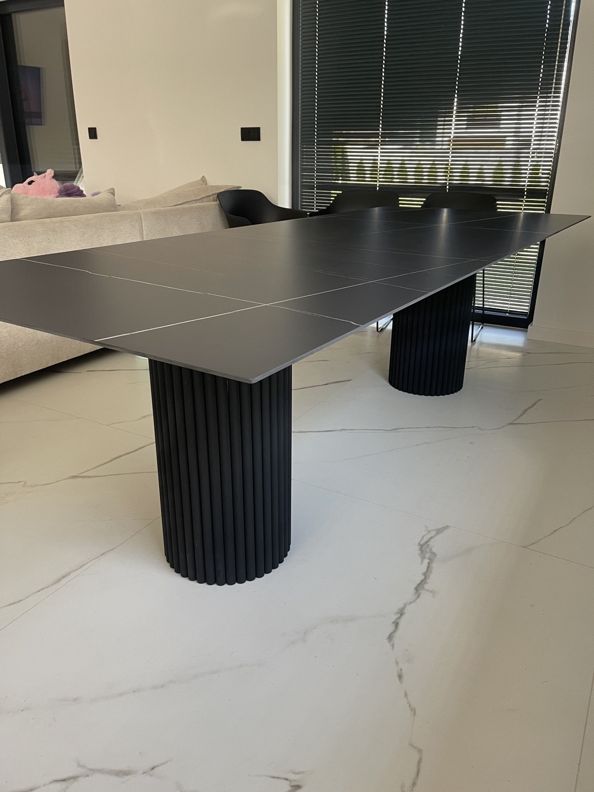
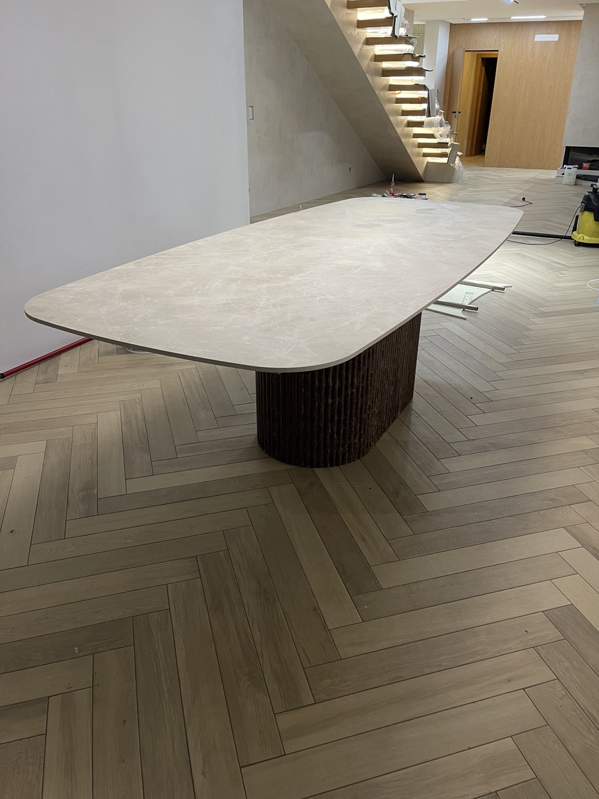
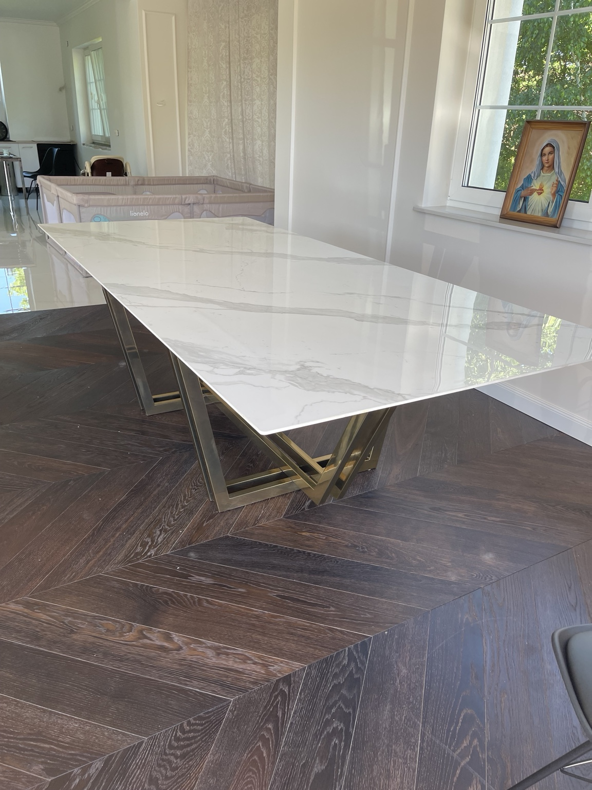
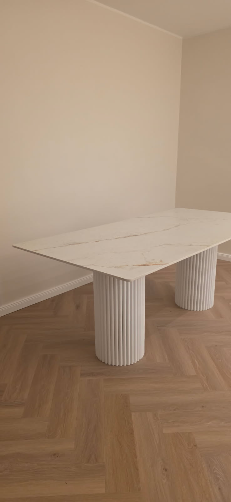
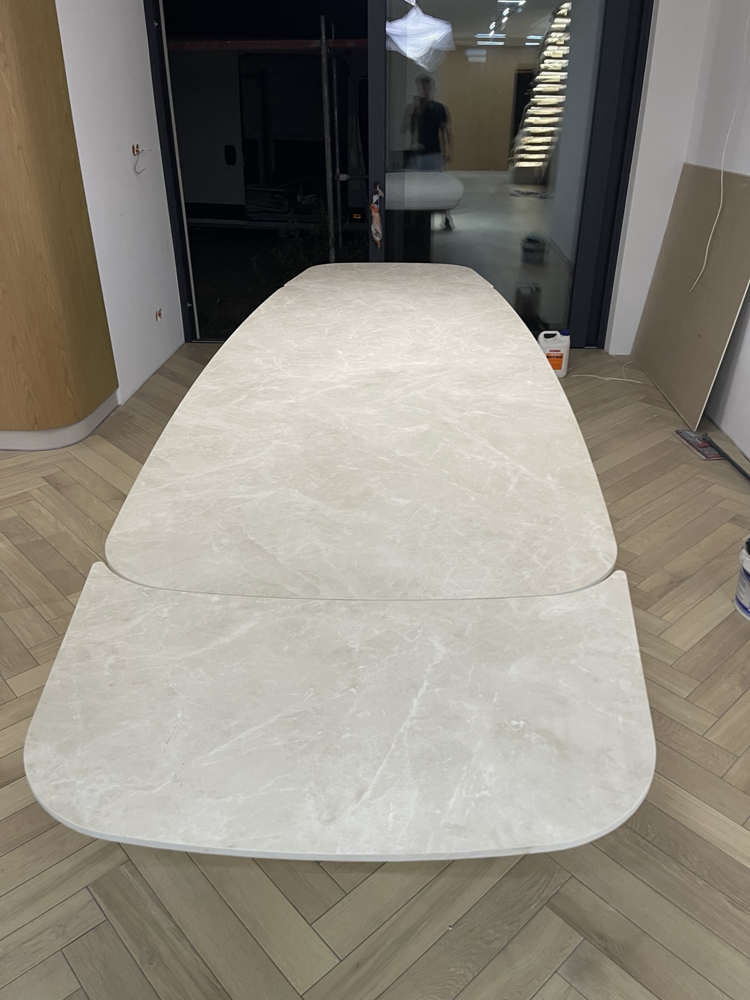
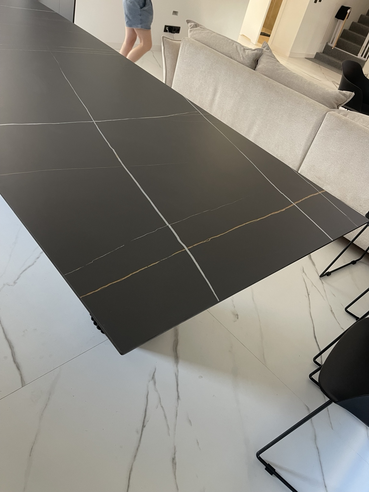

Column Noir
Czarny spiek · ryflowana stal · wersja stała

KRAKÓW · DOSTAWA W CAŁEJ POLSCE
Stalowa podstawa, dowolnie wybrany spiek kwarcowy i konstrukcja dopasowana do Twojego wnętrza. Wersja stała albo rozkładana.
Każdy stół wykonuję od podstaw: projektuję konstrukcję, spawam stalową podstawę i dopasowuję rozwiązania techniczne do konkretnego zamówienia.
Możesz wybrać dowolny spiek, wymiar, kolor podstawy oraz zdecydować, czy stół ma być stały, czy rozkładany.
WYBRANE REALIZACJE
Zdjęcia przedstawiają prawdziwe stoły wykonane dla klientów Noir Steel.



JEDEN STÓŁ. WIELE MOŻLIWOŚCI.
Projekt zaczynamy od Twojego wnętrza i potrzeb. Nie od gotowego katalogu.
Wybór wzoru, marki, wykończenia oraz grubości.
Prostokątny, owalny, zaokrąglony lub zaprojektowany indywidualnie.
System rozkładania dopasowany do konstrukcji i liczby miejsc.
Kolor, forma i wykończenie dobrane do blatu oraz wnętrza.

OD POMYSŁU DO GOTOWEGO STOŁU
Może to być zdjęcie wnętrza, szkic albo link do stołu, który Ci się podoba.
Ustalamy spiek, podstawę, wymiar, kolor i wersję stałą lub rozkładaną.
Przed rozpoczęciem znasz zakres wykonania, cenę oraz planowaną datę dostawy.
Gotowy stół jest bezpiecznie transportowany pod wskazany adres w Polsce.

RĘCZNA PRODUKCJA
To przy nim zaczyna się codzienność: śniadania, rozmowy, święta i spotkania z przyjaciółmi. Dlatego zależy mi, żeby każdy projekt był stabilny, funkcjonalny i pasował do wnętrza także po wielu latach.
Porozmawiajmy o Twoim stole ↘NAJCZĘSTSZE PYTANIA
Tak. Każdy projekt może powstać jako stół stały albo rozkładany. System dobieram do wymiarów, kształtu blatu i sposobu użytkowania.
Tak. Możesz wskazać konkretny wzór lub markę spieku. Pomagam też dobrać materiał do kolorystyki wnętrza i planowanego budżetu.
Standardowo około 2–3 tygodni od zatwierdzenia projektu i materiałów.
Tak. Organizuję bezpieczny transport i ustalam sposób wniesienia oraz montażu indywidualnie.
Orientacyjna cena początkowa to około 11 000 zł. Ostateczna wycena zależy od wymiaru, rodzaju spieku, podstawy i systemu rozkładania.
BEZPŁATNA WYCENA
Wyślij orientacyjny wymiar, miasto dostawy oraz informację, czy interesuje Cię wersja stała, czy rozkładana.